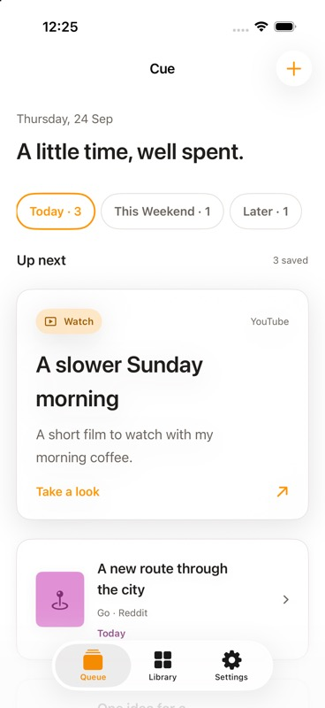
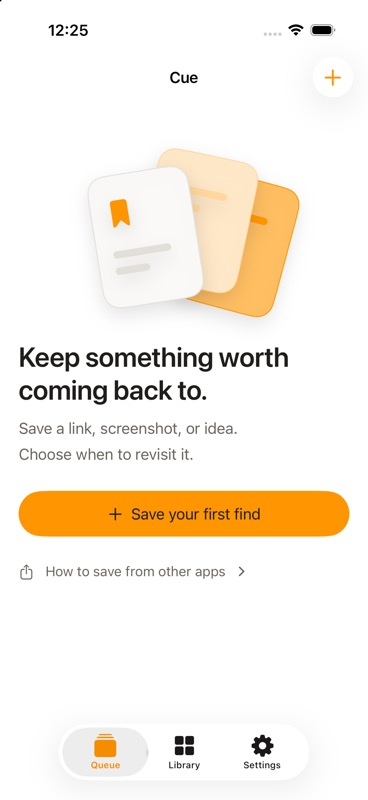

A quieter way to come back
Good finds.
Right moment.
Give the links, screenshots, and ideas you save a purpose and a time. Cue brings a few of them back when you’re ready to use them.
See how Cue worksA local-first iPhone app, currently in development.

The idea
Save for what comes next.
Things worth keeping often disappear into tabs, screenshots, and saved posts. Cue asks one simple question at capture: what do you want to do with this?
How Cue works
A small path from
saved to useful.
- 01
Bring it in
Share a link, image, or text to Cue from another app, or add it yourself.
- 02
Give it a purpose
Choose Read, Watch, Try, Buy, Go, Work, or Reference. Then pick Today, This Weekend, Later, or Keep.
- 03
Return when ready
See a small Queue, then mark a find done, snooze it, keep it, or discard it.

Made to feel manageable
A little time,
well spent.
Your Queue starts small, with up to three finds in each timing group before you choose to see more. Your Library keeps the rest available when you need it.
Your things stay yours
Private by default.
Useful by design.
Cue stores your saved items on your iPhone. It does not require an account or use analytics or tracking. When a saved link appears in your Queue or Library, Cue may contact the original website to fill in its title or image.
Read the Privacy PolicyAvailability
Cue is taking shape.
Early-access signups are not open yet. Check back here for availability updates.